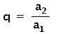

PA (Progressão Aritmética)
Uma progressão aritmética é uma sequência formada por termos que se diferenciam um do outro por um valor constante, que recebe o nome de razão, calculado por: r espaço igual a espaço a com 2 espaço subscrito fim do subscrito – espaço a com 1 subscrito
Onde:
-
r é a razão da PA;
a2 é o segundo termo;
a1 é o primeiro termo.
Sendo assim, os termos de uma progressão aritmética podem ser escritos da seguinte forma:
PA = a1, a2=(a1+r), a3=(a1+2r)... an= [a1 +(n-1)r]
Note que em uma PA de n termos a fórmula do termo geral (an) da sequência é:
an = a1 + (n – 1) r
Tipos de PA:
Constante:quando a razão for igual a zero e os termos da PA são iguais.
Exemplo: PA = (2, 2, 2, 2, 2, ...), onde r = 0
Crescente: quando a razão for maior que zero e um termo a partir do segundo é maior que o anterior;
Exemplo: PA = (2, 4, 6, 8, 10, ...), onde r = 2
Decrescente: quando a razão for menor que zero e um termo a partir do segundo é menor que o anterior.
Exemplo: PA = (4, 2, 0, - 2, - 4, ...), onde r = - 2
As progressões aritméticas ainda podem ser classificadas em finitas, quando possuem um determinado número de termos, e infinitas, ou seja, com infinitos termos.
Soma dos termos da PA
Utilizando a formula:
Onde, n é o número de termos da sequência, a1 é o primeiro termo e an é o enésimo termo. A fórmula é
útil
para
resolver questões em que é dado o primeiro e o último termo.
Quando um problema apresentar o primeiro termo e a razão da PA, você pode utilizar a fórmula:
Tendo em vista PA (2,4,6,8,10,12,14) Determinando a razão com:
E um exemplo de soma:
PG (Progressão Geométrica)
Uma progressão geométrica é formada quando uma sequência tem um fator multiplicador resultado da divisão
de
dois
termos consecutivos, chamada de razão comum, que é calculada por:

Onde:
-
q é a razão da PG;
a2 é o segundo termo;
a1 é o primeiro termo.
Uma progressão geométrica de n termos pode ser representada da seguinte forma: a1,a1q,a1q²,a1q³, ... a1q^(n-1) Sendo a1 o primeiro termo, o termo geral da PG é calculado por a1.q^(n-1).
Tipos de PG
Constante:quando a razão for igual a um e os termos da PG são iguais.
Exemplo: PG = (3, 3, 3, 3, 3, ...), onde q = 1
Crescente: quando a razão for maior que 1;
Exemplo: PG = (3, 9, 27, 81, ...), onde q = 3
Decrescente: quando a razão for maior que zero e menor que um.
Exemplo: PG = (10, 5, 2.5, 1.3, 0.6, ...), onde q = 1/2
Soma dos termos da PG
Utilizando a formula:
Usando essa fórmula para fazer a soma dos termos de uma PG, sendo a1 o primeiro termo, q a razão e n o número de termos.
Se a razão da PG for menor que 1, então usaremos a fórmula seguinte para fazer a soma dos termos:
Exemplos:
Razão de (1, 3, 9, 27, 81, ...):
Soma: